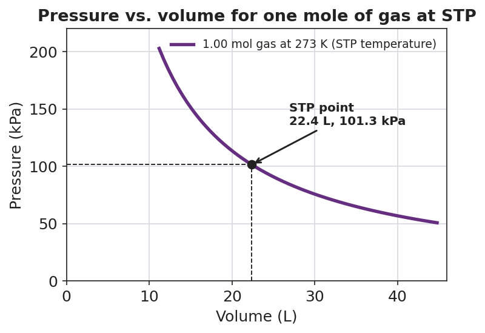

01 Phenomenon
Two lab groups each measure the volume of exactly one mole of carbon dioxide gas (CO₂). Group A works on a cold morning near sea level and reports 22.4 L. Group B works in a hot classroom at a higher elevation and reports 25.1 L. Same amount of gas — exactly 6.02 × 10²³ molecules each — but two different volumes on the report sheet. Neither group made a mistake.
02 Driving question
Why do scientists need a common "standard" set of conditions for reporting their results?
03 Notice & wonder
| I notice… | I wonder… |
|---|---|
Turn & Talk #1: Both groups had exactly one mole of CO₂ but reported different volumes. Using the pressure–volume curve your teacher is projecting, what would have to be true for every group, in every classroom, to report the same volume for one mole of gas?
04 Initial model
Before your teacher names anything: open Reference Table A in the 2025 Reference Tables. Find standard temperature, standard pressure, and the molar volume of a gas at STP. Notice that temperature and pressure are each given in two unit systems.
| Quantity (from Reference Table A) | Value(s) — give both units where shown |
|---|---|
| Standard temperature | |
| Standard pressure | |
| Molar volume of a gas at STP |
Why do you think Table A lists each of these in two different units? _______________________________________________
On the projected curve, the marked point is at 22.4 L and 101.3 kPa. Does the pressure at that point match the standard pressure you found above? _______________
05 Investigate
Part 1 — Trace the curve (do this with a pencil, no calculator)
Look at figures/boyles_law_stp.png:

Put your pencil on the marked point (22.4 L). Slide left so the volume gets smaller. What happens to the pressure? _______________
Now slide right so the volume gets bigger. What happens to the pressure? _______________
Write one sentence describing the trade-off between pressure and volume:
- Can you write down a single “volume of one mole of gas” from this curve alone? Why or why not? _______________________________________________
Part 2 — Mole ↔︎ liter conversions at STP
Use the molar volume of a gas at STP (22.4 L/mol) as your conversion factor. Show the setup so the units cancel.
Problem A — moles to liters. What volume does 2.00 mol of O₂ gas occupy at STP?
Setup: 2.00 mol × ______ L/mol = ______ L
Problem B — moles to liters. What volume does 0.500 mol of N₂ gas occupy at STP?
Setup: 0.500 mol × ______ L/mol = ______ L
Problem C — liters to moles. How many moles of He gas are in 67.2 L of He at STP?
Setup: 67.2 L ÷ ______ L/mol = ______ mol
Part 3 — Reading the curve
At what volume does the curve cross a pressure of 101.3 kPa? _______________
Following the curve, if the pressure on the gas doubled, would the volume get larger or smaller? _______________
We used 22.4 L/mol for O₂, N₂, and He — three different gases with different molar masses. Why does the same volume-per-mole work for all of them at STP?
06 Make it make sense
Calculate each conversion at STP. Show the setup and circle your final answer with the correct unit. These are the same conversions you practiced in the Investigation — confirm your work here.
1. What volume does 2.00 mol of O₂ gas occupy at STP?
2. What volume does 0.500 mol of N₂ gas occupy at STP?
3. How many moles of He gas are in 67.2 L of He at STP?
4. State standard temperature and standard pressure, each in both unit systems.
Standard temperature: ______ K = ______ °C Standard pressure: ______ kPa = ______ atm
07 Key vocabulary
- STP (standard temperature and pressure)
- the agreed-upon reference conditions for reporting gas measurements: standard temperature 273 K (0 °C) and standard pressure 101.3 kPa (1 atm), both read from Reference Table A; a gas measurement is comparable across labs only when reported at STP
- molar volume
- the volume occupied by one mole of a gas; at STP the molar volume of *any* gas is 22.4 L/mol (Reference Table A), which serves as the conversion factor between moles of a gas and liters of a gas at STP
- standard
- an agreed-upon reference value or set of conditions that everyone uses so that results are comparable and reproducible; STP is the standard for gas measurements, just as the meter and the kilogram are standards for length and mass
Use each term in a sentence about today’s investigation. Do not copy the definition — describe something you actually did, traced, or calculated.
STP: _______________________________________________ _______________________________________________
molar volume: _______________________________________________ _______________________________________________
standard: _______________________________________________ _______________________________________________
08 Revise your model
Return to your Initial Model (the Reference Table A values). Add vocabulary labels:
Label 273 K and 101.3 kPa as “standard temperature” and “standard pressure.”
Next to 22.4 L/mol, write the warning label: “molar volume — only valid at ______.”
Finish this Because / But / So sentence about the phenomenon:
Two lab groups reported different volumes for one mole of CO₂ because __________________________________________, but __________________________________________, so __________________________________________.
09 Exit ticket
(a) State standard temperature and standard pressure, each with correct units (give both unit systems if you can).
Standard temperature: __________________________ Standard pressure: __________________________
(b) What volume does 4.00 mol of CH₄ gas occupy at STP? Show the conversion using molar volume.
Setup: ______ mol × ______ L/mol = ______ L
(c) In one sentence, explain why a reported gas volume is meaningless unless the temperature and pressure are also stated.
10 Explore further
- STP reference-table use: Using Reference Table A from the 2025 NYS Chemistry Reference Tables, students locate and record the three standard-conditions values: standard temperature (273 K / 0 °C), standard pressure (101.3 kPa / 1 atm), and molar volume of a gas at STP (22.4 L/mol). They then convert moles of a gas to liters at STP, and liters of a gas at STP back to moles, using 22.4 L/mol as the conversion factor.
- Standard-conditions discussion / Boyle's Law trace: Students read `figures/boyles_law_stp.png` (an inverse pressure–volume curve for one mole of gas held at the STP temperature) and answer: at what volume does the curve cross 101.3 kPa? What happens to the volume if the pressure doubles? Why can't you report a gas volume without also reporting the temperature and pressure?
- Javalab "Boyle's Law" gas simulation (optional digital): the Javalab pressure–volume piston simulation lets students drag a piston and watch pressure change in real time, reproducing the inverse curve in the figure. No external URL is required for the core lesson; the printed figure carries the same evidence.